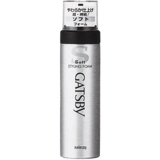

返回列表
产品名称：ギャツビー スタイリングフォーム ソフト

マンダム ギャツビー スタイリングフォーム ソフト １８５ｇ
メーカー マンダム
JANコード 4902806583212
商品の特徴
自然にまとめた軽い手触りのふんわりセット。
- 成分・分量
- 水、ＬＰＧ、エタノール、ミネラルオイル、（メタクリロイルオキシエチルカルボキシベタイン／メタクリル酸アルキル）コポリマー、セテス-１５、（Ｃ１２-１４）パレス-３、ステアルトリモニウムクロリド、ステアリン酸ソルビタン、パンテノール、メチルパラベン、ブチルパラベン、香料
- 用法及び用量
- ○上向きで使うとガスだけが出て中味が残ります○低温下 泡になりにくいときは ぬるま湯につけてからお使いください